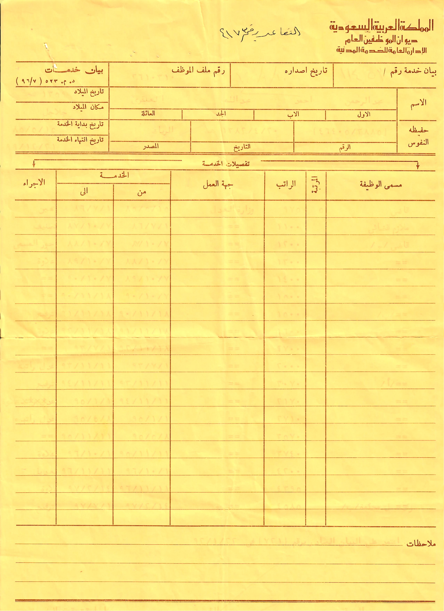
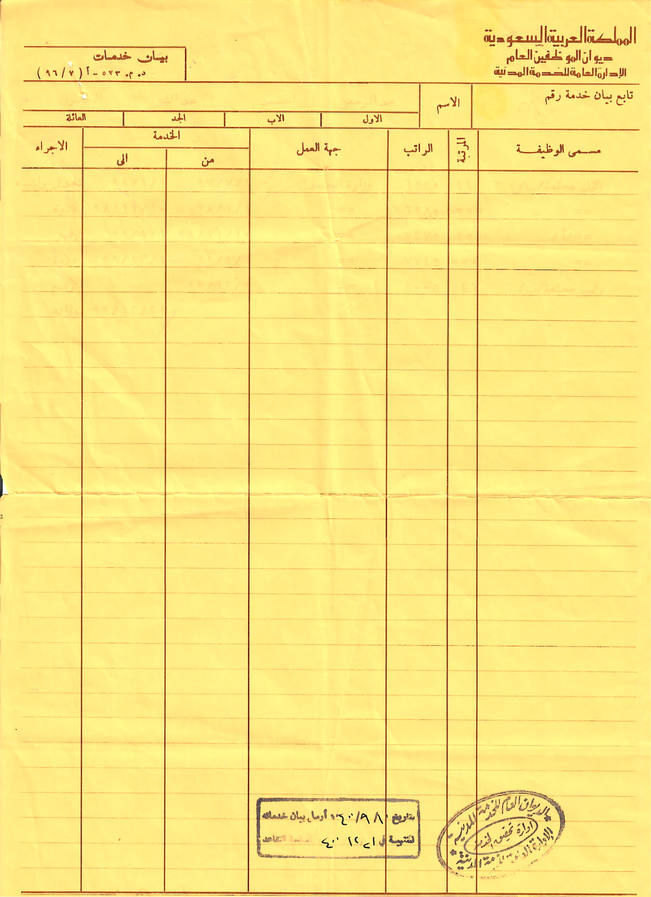
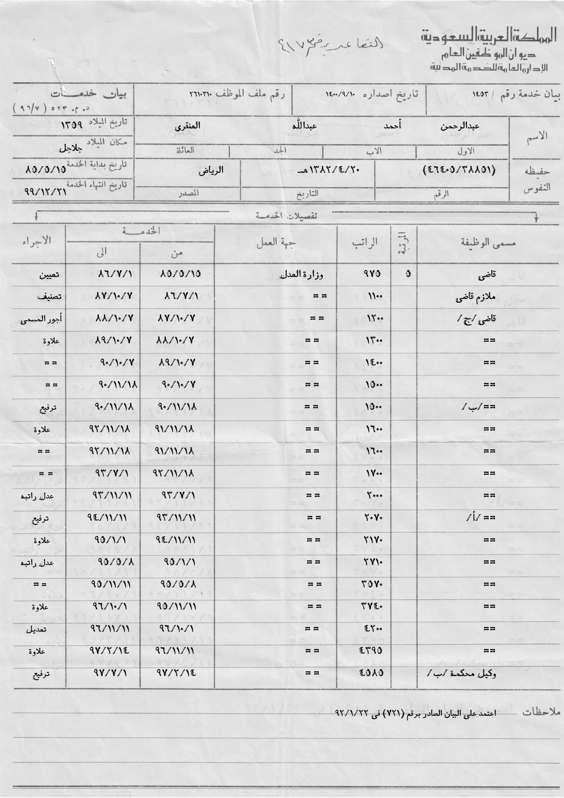
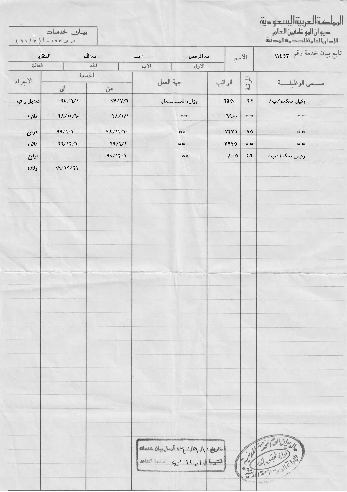
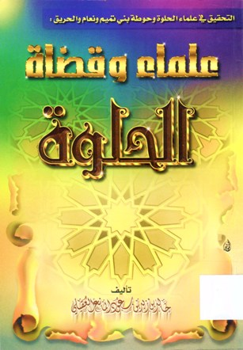
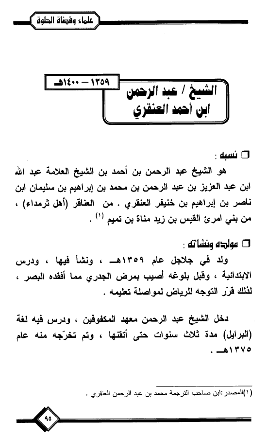
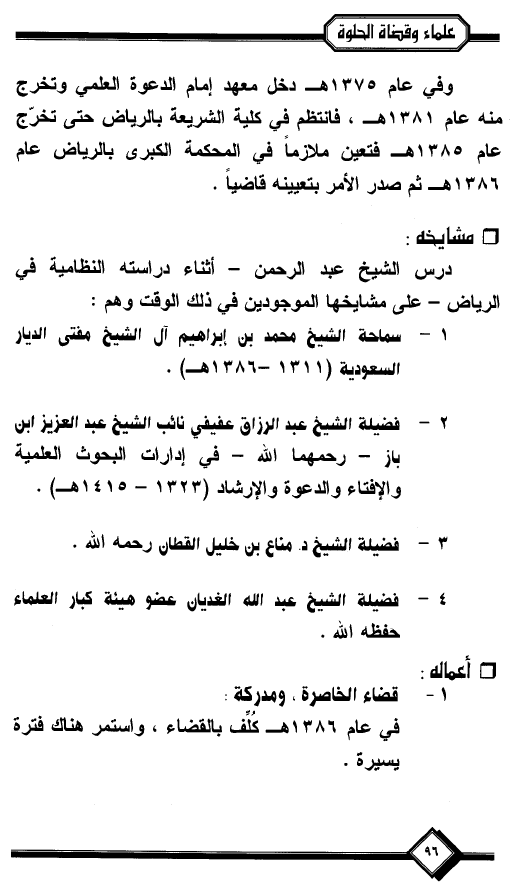
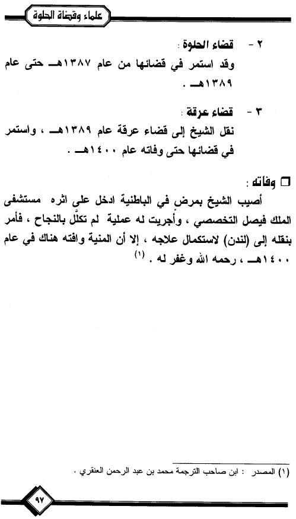

الصورة الشخصية
البيانات العامة
الاسم كاملًا: عبدالرحمن بن أحمد بن الشيخ عبدالله بن عبدالعزيز بن عبدالرحمن بن محمد بن إبراهيم بن سليمان بن ناصر بن إبراهيم العنقري، من عناقر أهل ثرمداء في منطقة الوشم في نجد، من نسل الأمير إبراهيم بن سليمان العنقري مؤسس قصر العناقر الاثري.
القبيلة: من بني سعد بن تميم بن خندف بن مضر بن عدنان بن إسماعيل بن إبراهيم عليه السلام.
المهنة: قاضي شرعي سعودي.
الولادة: ولد سنة 1359 هجرية.
الوفاة: 21 ذو الحجة 1399 هجرية.
سبب الوفاة: سرطان في البنكرياس.
موقع الوفاة: بريطانيا، لندن.
مولده ونشأته وتعليمه
وُلد الشيخ عبدالرحمن العنقري عام 1359هـ، ودرس المرحلة الابتدائية. وقبل بلوغه أصيب بمرض الجدري، مما تسبب في فقده البصر، فقرر التوجه إلى الرياض لمواصلة تعليمه.
دخل معهد المكفوفين في الرياض، ودرس فيه طريقة برايل مدة ثلاث سنوات حتى أتقنها، وتخرج فيه عام 1375هـ. وفي العام نفسه التحق بمعهد إمام الدعوة العلمي، وتخرج فيه عام 1381هـ، ثم التحق بكلية الشريعة بالرياض، وتخرج فيها عام 1385هـ. وبعد تخرجه عُيِّن ملازمًا في المحكمة الكبرى بالرياض عام 1386هـ، ثم صدر الأمر بتعيينه قاضيًا.
مشايخه
المشايخ الذي تعلم عليهم هم:
- محمد بن إبراهيم آل الشيخ مفتي الديار السعودية.
- الشيخ عبدالرزاق عفيفي، نائب الشيخ عبدالعزيز بن باز في إدارات البحوث العلمية والإفتاء والدعوة والإرشاد.
- الشيخ مناع بن خليل القطان.
- الشيخ عبدالله بن عبدالرحمن الغديان، عضو هيئة كبار العلماء.
مذهبه
كان الشيخ عبدالرحمن العنقري مسلمًا من أهل السنة والجماعة، وكان على المذهب الحنبلي.
نسبه وأسرته
هو الشيخ القاضي عبدالرحمن بن أحمد بن الشيخ عبدالله بن عبدالعزيز بن عبدالرحمن بن محمد بن الأمير إبراهيم بن سليمان بن ناصر بن الأمير إبراهيم العنقري، من العناقر أهل ثرمداء، من بني سعد من بني تميم.
والده أحمد بن الشيخ عبدالله بن عبدالعزيز العنقري، ووالدته منيرة بنت عبدالله بن محمد بن ثاقب. كنيته أبو عبدالله.
له من الأبناء: أحمد، توفي صغيراً، وعبدالله، ومحمد، وإبراهيم. وله من البنات: هدى، والجوهرة، ونورة، وأسماء. وله من الإخوة والأخوات: اللواء عبدالعزيز والجوهرة من الأب، وناصر وصالح شقيقان من الأب والأم. وجده هو الشيخ عبدالله بن عبدالعزيز العنقري.
حياته وعمله القضائي
فقد الشيخ عبدالرحمن العنقري بصره قبل بلوغه سن العاشرة، وعُرف بالفطنة وقوة الملاحظة. وبعد تخرجه في كلية الشريعة اتجه إلى القضاء الشرعي، فعمل أولًا ملازمًا في المحكمة الكبرى بالرياض، ثم كُلّف بالقضاء في الحاضرة ومدركة عام 1386هـ، واستمر هناك مدة يسيرة. ثم تولى القضاء في الحلوة من عام 1387هـ حتى عام 1389هـ، وبعدها نُقل إلى قضاء عرقة عام 1389هـ، واستمر في قضائها حتى وفاته.
وتأسست المحكمة الشرعية بعرقة سنة 1384هـ، وتولى الشيخ إبراهيم بن عتيق القضاء فيها إلى عام 1389هـ، ثم خلفه الشيخ عبدالرحمن العنقري.
المسيرة القضائية
بدأ عبدالرحمن العنقري عمله في القضاء بتاريخ 15 جمادى الأولى 1385هـ، واستمر في السلك القضائي حتى وفاته بتاريخ 21 ذو الحجة 1399هـ. وجاء تسلسله الوظيفي على النحو الآتي:
- قاضٍ في وزارة العدل، من 15 جمادى الأولى 1385هـ حتى 1 رجب 1386هـ.
- ملازم قاضٍ، من 1 رجب 1386هـ حتى 7 شوال 1387هـ.
- قاضٍ «ج»، من 7 شوال 1387هـ حتى 11 ذو القعدة 1393هـ.
- قاضٍ «أ»، من 11 ذو القعدة 1393هـ حتى 14 صفر 1397هـ.
- وكيل محكمة «ب»، من 14 صفر 1397هـ حتى 10 محرم 1398هـ.
- وكيل محكمة «أ»، من 10 ذو القعدة 1398هـ حتى 1 ذو الحجة 1399هـ.
- رئيس محكمة «ب»، من 1 ذو الحجة 1399هـ حتى 21 ذو الحجة 1399هـ.
بيان ديوان الموظفين العام
من الوثائق المتعلقة بالمسار الوظيفي للشيخ عبدالرحمن بن أحمد العنقري، بيان صادر عن ديوان الموظفين العام، الإدارة العامة للخدمة المدنية، ويحمل البيان رقم 1453. وتُعرض هنا صور الأصل الممسوح ضوئيًا، ثم النسخة المفرغة والمعاد كتابتها لتسهيل القراءة.
بيانات الوثيقة
نوع المادة: وثيقة إدارية / بيان وظيفي.
الجهة: ديوان الموظفين العام.
الإدارة: الإدارة العامة للخدمة المدنية.
رقم البيان: 1453.
الشخص المذكور: الشيخ القاضي عبدالرحمن بن أحمد العنقري.
عدد الأوراق: ورقتان.
حالة النسخ المعروضة: أصل ممسوح ضوئيًا، ونسخة مفرغة ومعاد كتابتها لتوضيح القراءة.
تنبيه توثيقي
النسخة الأصلية الممسوحة ضوئيًا تُعرض كما هي دون تعديل على نصها. أما النسخة المفرغة والمعاد كتابتها فهي نسخة أُعدت لتسهيل قراءة الكتابة الكربونية، ولا تُعد أصلًا مستقلًا عن الوثيقة.
الأصل الممسوح ضوئيًا
الأصل الممسوح ضوئيًا - الورقة الأولى

الأصل الممسوح ضوئيًا - الورقة الثانية

النسخة المفرغة والمعاد كتابتها
النسخة المفرغة والمعاد كتابتها - الورقة الأولى

النسخة المفرغة والمعاد كتابتها - الورقة الثانية

شعره ومراسلاته
مرضه ووفاته
أصيب الشيخ عبدالرحمن العنقري بمرض سرطان البنكرياس، وأُدخل على أثره مستشفى الملك فيصل التخصصي، وأُجريت له عملية لم تكلل بالنجاح. ثم أُمر بنقله إلى لندن لاستكمال العلاج، فسافر إليها بتاريخ 27 سبتمبر 1979م، وتوفي هناك في 11 نوفمبر 1979م، الموافق 21 ذو الحجة 1399هـ، ثم نُقل جثمانه إلى الرياض، ودُفن في مقبرة العود. وكان عمره عند وفاته نحو أربعين عامًا.
بيانات المصدر
اسم الكتاب: التحقيق في علماء الحلوة وحوطة بني تميم ونعام و الحريق، علماء و قضاة الحلوة.
المؤلف: خالد بن زيد بن سعود المانع العقيلي.
الطبعة: الأولى.
سنة النشر: 1421هـ - 2000م.
الصفحات: 95، 96، 97.
رقم الإيداع: 0772/21.
ردمك: 7 - 930 - 36 - 9960.
صورة غلاف المصدر

صور الصفحات من المصدر
الصفحة 95

الصفحة 96

الصفحة 97

النص المفرغ من المصدر
الصفحة رقم 95
الصفحة رقم 96
الصفحة رقم 97
كلمات مفتاحية
عبدالرحمن بن أحمد العنقري، الشيخ عبدالرحمن العنقري، قاضي شرعي، ديوان الموظفين العام، الإدارة العامة للخدمة المدنية، بيان رقم 1453، عرقة، الحلوة، الخاصرة، مدركة، ثرمداء، العناقر، بني تميم، علماء وقضاة الحلوة.